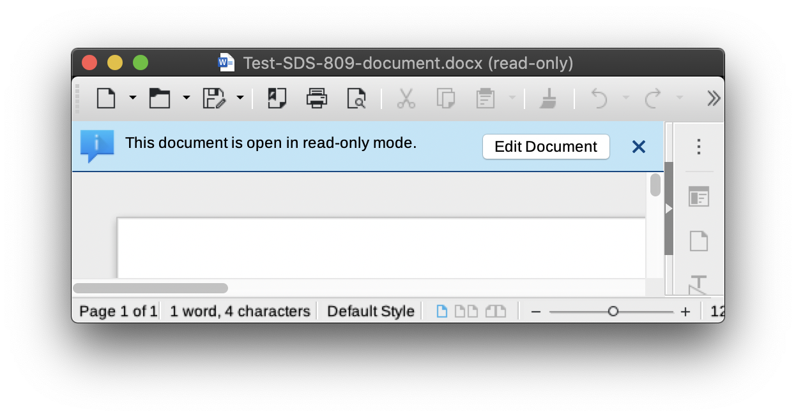
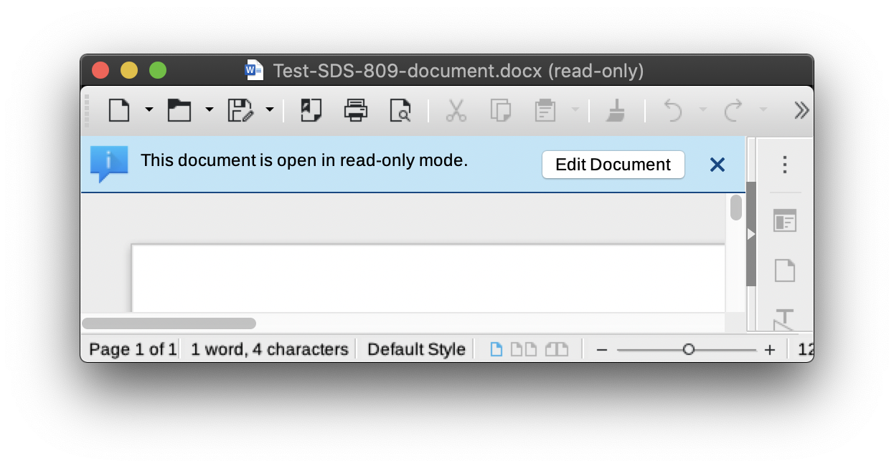
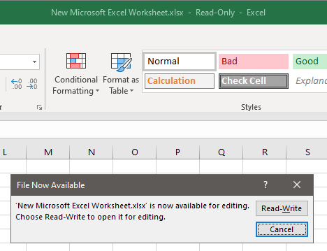

File Locking¶
Mountain Duck supports locking files to prevent conflicting edits from others while a document is open in an editor.
Native server-side locking¶
File locking is natively supported for the following protocols:
Note
Some WebDAV implementations including NextCloud & ownCloud may not support locking documents. Make sure to select Nextcloud & ownCloud in the bookmark configuration to make use of pseudo locking.
Files opened from one of the supported protocols are locked for editing by other users. Mountain Duck locks files on the server when opened in an editor. This prevents other users from modifying the document until the file is closed by the user.
Pseudo locking for protocols with no native lock support using lock owner files¶
For connections other than WebDAV, we support detecting files opened by others by looking for owner lock files uploading to the server.
Note
Support is currently limited to files edited in Microsoft Word, Microsoft Excel, and Microsoft Powerpoint on macOS and Windows.
References¶
When a previously saved file is opened for editing, for printing, or for review, Word creates a temporary file that has a .doc file name extension. This filename extension begins with a tilde (~) that is followed by a dollar sign ($) that is followed by the remainder of the original file name. This temporary file holds the login name of the person who opens the file. This temporary file is called the “owner file”.
Error message when opening locked documents¶
Attempting to open a locked document, an error message is displayed notifying the document can only be opened in read-only mode. Samples of error messages from different applications.
Read Only. To save a copy of this document, click Duplicate

Libre Office
Document ... is locked for editing by... . Open document read-only or open a copy of the document for editing.
 

{kind=link}

Choose Receive notification when the original copy is available to open the document in read-only mode and get an alert when the other user has closed the document.


Microsoft Excel
File in Use: File is locked for editing by ... . Open 'Read-Only' or click 'Notify' to open read-only and receive notification when the document is no longer in use.
{kind=link}
Choose Notify to open the document in read-only mode and get an alert when the other user has closed the document.
{kind=link}
Resolution¶
If you get a warning that the document is Read-Only, ask other users to close the document. If the Read-Only warning prevails, these are the steps to follow.
If you are connecting to a WebDAV server with lock support, ask the server administrator to clean up locks on the server.
For all other servers, delete the file named
~$....
Preferences¶
Locking is disabled by default. Refer to Preferences to enable it in Connection → Locking → Lock Files.